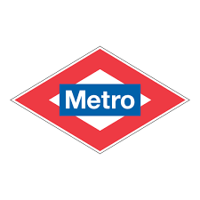
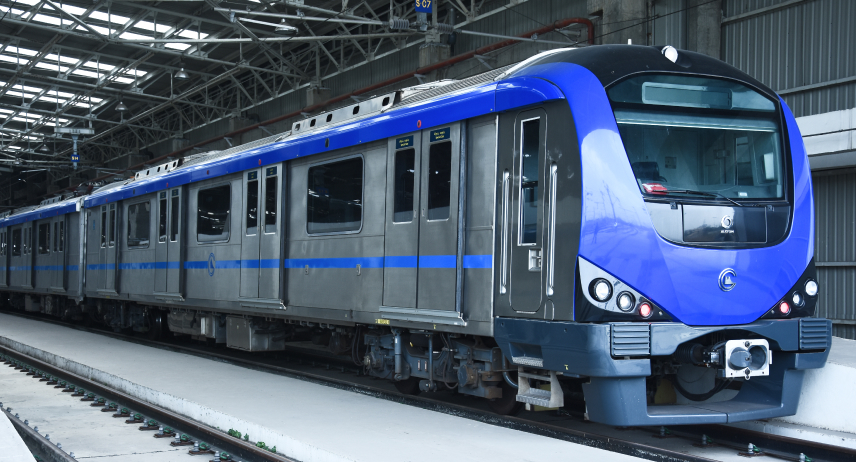
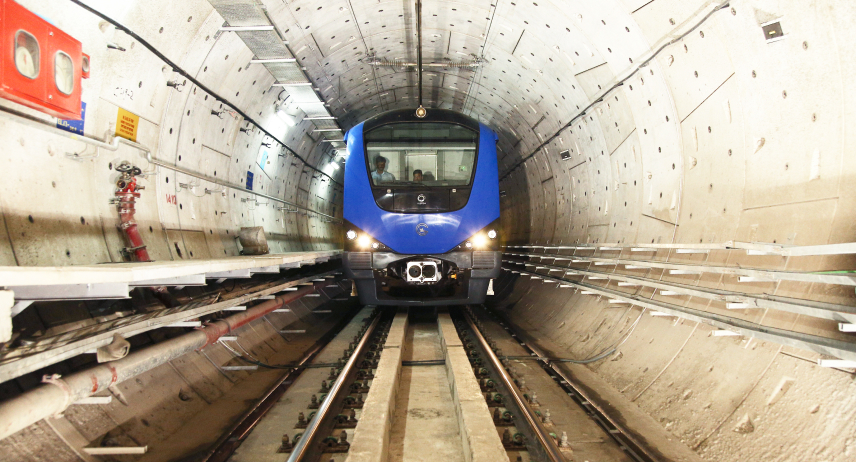

<!doctype html>
<html lang="en">
    <head>
        <meta charset="UTF-8">
        <meta name="viewport" content="width=device-width, initial-scale=1.0">
        <title>Metro</title>
        <link rel="icon" href="metroprojectimages/favicon/favicon.ico">
        <meta name="author" content="dinesh thangavel">
        <meta name="description" content="it has a chennai metro details, ticket booking, and safety measures and public feedback">
        <meta name="keywords" content="metro, ticket booking, maps, ticket booking, maps">
        
        <!--this is for graph meta characters-->
        <meta property="og:title" content="chennai metro">
        <meta property="og:description" content="chennai metro page for public usage">
        <meta property="og:url" content="https://chennaimetrorail.org/">
        <meta property="og:image" content="https://chennaimetrorail.org/wp-content/uploads/2024/03/cmrl-banner.jpg">
         <script src="https://kit.fontawesome.com/b421bddb66.js" crossorigin="anonymous"></script>
         
    </head>
    
    <body>
        
    </body>
    </html>
    <body>
        <header style="display: flex;gap: 200px;" id="top">
            <div>
                
            </div>
           <center>
            <div>
                
                <h1><i>"Express way to reach your destination"</i></h1>
            </div>
            </center>
            <div>
                 <a href="https://chennaimetrorail.org/" target="_blank" style="font-size: 30px;"><br><center>official website</center></a><br>
                 <b style="font-size: larger;"><u>contact information</u></b><br><br>
                 <b>General Helpline:</b> 1800 425 1553<br>
                 <b>Women's Helpline: </b>155370<br>
                 <b>Email: </b>chennaimetrorail@cmrl.in<br>
                 <b>Website:</b> www.chennaimetrorail.org
            </div>
            
            
        </header><hr>
        <section>
        <div style="text-align: center;">
            <a href="https://www.facebook.com/" target="_blank"><i class="fa-brands fa-facebook"></i></a>
           <a href="https://www.whatsapp.com/" target="_blank"> <i class="fa-brands fa-whatsapp"></i></a>
            <a href="https://x.com/" target="_blank"><i class="fa-brands fa-twitter"></i></a>
            <a href="https://www.instagram.com/" target="_blank"><i class="fa-brands fa-instagram"></i></a>
            <a href="https://www.youtube.com/" target="_blank"> <i class="fa-brands fa-youtube"></i></a>
          </div><br><br>
          </section>
        <nav style="display: flex;gap: 70px;">

            <div style="font-size:30px;">
                <ol>
                   <b style="font-size: larger;">Dashboard</b>
                   <li><a href="#home"> Home</a> </li>
                   <li><a href="#network">network</a></li>
                   <li> <a href="ticketbooking.html" target="_blank">Ticket</a></li>
                   <li><a href="feedbackform.html" target="_blank">feedback</a></li> 
                   <li><a href="safety.html" target="_blank">security</a></li>
                   <li><a href="map" target="_blank">map</a>
                       <ol>
                          <li><a href="map.html" target="_blank">phase 1</a></li>
                          <li><a href="mapphase2.html" target="_blank">phase 2</a></li>
                        </ol>
                    </li>
                 </ol>
            </div > 
                <figure>
                    
                    <figcaption align="center" style="font-size:30;">
                        <a href="https://chennaimetrorail.org/latest-updates/" target="_blank">latest-updates</a>
                    </figcaption>
                </figure>
                <figure>
                    
                
                    <figcaption align="center" style="font-size:30;">
                        <a href="https://travelplanner.chennaimetrorail.org/" target="_blank">Travel planner</a>
                    </figcaption>
                </figure>
         </nav>
         
        
        <main>
            <h1 id="home">Home :</h1><br><br>
            <div style="display: flex;gap: 100px;">
                <video controls>
                <source src="https://www.shutterstock.com/shutterstock/videos/1040963282/preview/stock-footage-metro-train-station-meenambakkam-chennai-tamil-nadu-india-on-nov.webm">
                </video>
                <p style="font-size: larger;">The Chennai Metro is a rapid transit system serving the city of Chennai, India. Operated by Chennai Metro Rail Limited (CMRL) – a joint venture between the Government of India and the State Government of Tamil Nadu, the network consists of two lines and spans 54.1 km (33.6 mi). The system uses standard gauge and has 41 underground and elevated stations. Once ongoing construction is completed, it will become the 2nd largest rapid transit system in India after the Delhi Metro.<br><br>
                Planning for the metro started in 2007-08 with construction commencing in February 2009. After testing in 2014, the first segment of the metro between the Alandur and Koyambedu stations on the Green Line began operations on 29 June 2015. On 21 September 2016, operations on the Blue Line commenced between Chennai Airport and Little Mount. The underground stretch from AG-DMS to Washermanpet of Blue Line opened on 10 February 2019, completing phase 1 of the Metro.</p>
            </div><br><br>
            <div>
                <h1>Background :</h1>
                <p style="font-size: larger;">A single electrified line from Chennai Beach to Tambaram began operations in 1931 as part of the Chennai Suburban Railway. Two other rail lines were subsequently built, connecting Chennai Central to Gummidipoondi and Tiruvallur in 1979.[6][7] In 1965, the Planning Commission evaluated the capacity of the transportation network in major metropolitan cities including Madras, and developed plans for further expansion of transportation amenities.[8][9] As a result, an initial stretch of the Chennai Mass Rapid Transit System (MRTS) between Chennai Beach and Chepauk opened in 1995 – the first elevated rail line in India. The MRTS later extended to Thirumayilai in 1997, to Thiruvanmiyur in 2004, and to Velachery in 2007.[10][11][12] In 2006, a modern metro rail system for Chennai was planned, to be modeled after the Delhi Metro.</p>
            </div>
        </main>
        <section>
            <div>
                <h1 id="network">Network :</h1>
                <table border="1" style="border-collapse: collapse; text-align: center;"  width="1000" height="500" align="center" >
                    <thead > 
                      <center> <b> phase 1 network </b></center><br>
                        <tr>
                            <th>line no</th>
                            <th>line name</th>
                            <th colspan="2">terminals</th>
                            <th>distance</th>
                            <th>stations</th>
                            <th>opening date</th>
                        </tr>
                    </thead>
                    <tbody>
                        <tr>
                            <td>1</td>
                            <td style="background-color: rgb(129, 129, 207);">Blue</td>
                            <td>chennai Airport</td>
                            <td>little mount</td>
                            <td>33km</td>
                            <td>6</td>
                            <td>21 sep 2016</td>
                        </tr>
                        <tr>
                            <td>1</td>
                            <td style="background-color: rgb(129, 129, 207);">Blue</td>
                            <td>little mount </td>
                            <td>ad-gms</td>
                            <td>33</td>
                            <td>4</td>
                            <td>25th may 2018</td>
                        </tr>
                        <tr>
                            <td>1</td>
                            <td style="background-color: rgb(129, 129, 207);">Blue</td>
                            <td>AG-DMS</td>
                            <td>Washermanpet</td>
                            <td>33km</td>
                            <td>7</td>
                            <td>10 feb 2019</td>
                        </tr>
                        <tr>
                            <td>1</td>
                            <td style="background-color: rgb(129, 129, 207);">blue</td>
                            <td>Washermanpet</td>
                            <td>vimco nagar</td>
                            <td>33km</td>
                            <td>8</td>
                            <td>14 feb 2021</td>
                        </tr>
                        <tr>
                            <td>1</td>
                            <td style="background-color: rgb(129, 129, 207);">Blue</td>
                            <td>wimco nagar</td>
                            <td>wimco nagar depot/td>
                            <td>33km</td>
                            <td>1</td>
                            <td>13 mar 2022</td>
                        </tr>
                        <tr>
                            <td>2</td>
                            <td style="background-color: rgb(118, 198, 118);">Green</td>
                            <td>koyambedu</td>
                            <td>Alandur</td>
                            <td>22km</td>
                            <td>8</td>
                            <td>29 jun 2015</td>
                        </tr>
                        <tr>
                            <td>2</td>
                            <td style="background-color: rgb(118, 198, 118);">Green</td>
                            <td>Alandur</td>
                            <td>st.thomas mount</td>
                            <td>23km</td>
                            <td>1</td>
                            <td>14 oct 2016</td>
                        </tr>
                        <tr>
                            <td>2</td>
                            <td style="background-color: rgb(118, 198, 118);">Green</td>
                            <td>koyambedu</td>
                            <td>nehru park</td>
                            <td>22km</td>
                            <td>7</td>
                            <td>15 may 2018</td>
                        </tr>
                    </tbody>
                </table><br><br>
            </div>
            <div>
                <center><table border="1" style="border-collapse: collapse; text-align: center;" width="1000" height="500">
                    <thead>
                        <b>phase 2 network</b><br><br>
                        <tr>
                            <th>line no</th>
                            <th>line name</th>
                            <th colspan="2">terminals</th>
                            <th>distance</th>
                            <th>stations</th>
                            <th>opening date</th>

                        </tr>
                    </thead>
                    <tbody>
                        <tr>
                            <td rowspan="3">3</td>
                            <td style="background-color: blueviolet;" rowspan="3">purple</td>
                            <td>nehru nagar</td>
                            <td>sholinganallur</td>
                            <td rowspan="3">45.4km</td>
                            <td>10</td>
                            <td rowspan="3">december 2027</td>

                        </tr>
                        <tr>
                            <td>sholinganallur</td>
                            <td>siruseri</td>
                            <td>9</td>
                        </tr>
                        <tr>
                            <td>madhavaram</td>
                            <td>nehru nagar</td>
                            <td>28</td>
                        </tr>
                        <tr>
                            <td rowspan="3">4</td>
                            <td style="background-color: yellow;" rowspan="3">yellow</td>
                            <td>poonamallee bypass</td>
                            <td>porur junction</td>
                            <td rowspan="3">26.1km</td>
                            <td>10</td>
                            <td>dec 2025</td>
                        </tr>
                        <tr>
                            <td>porur junction</td>
                            <td>kadambakkam powerhouse</td>
                            <td>8</td>
                            <td>july 2026</td>
                        </tr>
                        <tr>
                            <td>kodambakkam</td>
                            <td>panangal park</td>
                            <td>2</td>
                            <td>feb 2027</td>
                        </tr>
                        <tr>
                            <td rowspan="5">5</td>
                            <td rowspan="5" style="background-color: red;">red</td>
                            <td>madhavaram</td>
                            <td>retteri</td>
                            <td rowspan="5">44.6km</td>
                            <td>8</td>
                            <td>december 2027</td>
                        </tr>
                        <tr>
                            <td>retteri</td>
                            <td>koyambedu</td>
                            <td>8</td>
                            <td>december 2028</td>
                        </tr>
                        <tr>
                            <td>koyambedu</td>
                            <td>alappakkam</td>
                            <td>7</td>
                            <td>december 2027</td>
                        </tr>
                        <tr>
                            <td>alappakkam</td>
                            <td>chennai trade center</td>
                            <td>5</td>
                            <td>july 2026</td>
                        </tr>
                        <tr>
                            <td>chennai trade centre</td>
                            <td>sholinganallur</td>
                            <td>17</td>
                            <td>dec 2027</td>
                        </tr>
                    </tbody>

                </table></center>

            </div><br><hr><br>
            <footer>
                <div>
                    <dl>
                       <b> <dt>Reference :</dt></b>
                        <dd> 1.PHASE-2 MAP (PDF) (Report). Chennai Metro Rail Limited. Retrieved 7 May 2025.<br>
                             2."92.10 lakh passengers recorded to have travelled in March, 2025" (PDF).<br>
                             3."10.52 crore passengers travelled in Chennai Metro Train in 2024" (PDF).<br>
                             4.Sampath, Nirupa (3 April 2025). "Chennai Metro Rail outsources phase 2 to Delhi Metro". DT Next. Retrieved 18 April 2025.<br>
                             5."Metro Rail: power supply, overhead equipment contract given" (PDF). Chennai Metro Rail Limited. 2 November 2015. Archived (PDF) from the original on 8 April 2023. Retrieved 31 January 2023.<br>
                             6.Chennai Division, General Information (PDF) (Report). Southern Railway Zone, Ind</dd>
                    </dl>
                </div>
                <div style="display: flex;gap: 200px;">
                    <p>The Government of Tamil Nadu created a Special Purpose Vehicle (SPV) for implementing the Chennai Metro Rail Project. <br>This SPV named as “Chennai Metro Rail Limited” was incorporated on 03.12.2007 under the Companies Act.<br><br><a href="terms"> 2024 Chennai Metro Rail Limited. All Rights Reserved</a><br><br><a href="privacypolicy">Terms & Conditions|Privacy Policy
</a></p>
                    <a href="https://chennaimetrorail.org/" target="_blank" style="font-size: 30px;"><br><center>official website</center></a>
                
                </div>
                <div>
                   <center><a href="#top">move to top</a></center> 

                </div>
            </footer>
            

            
        </section>
    </body>
</html>
